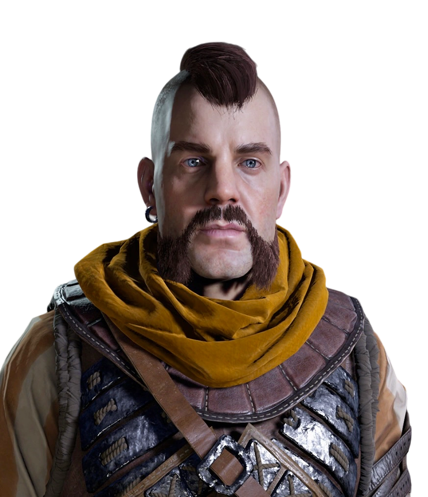
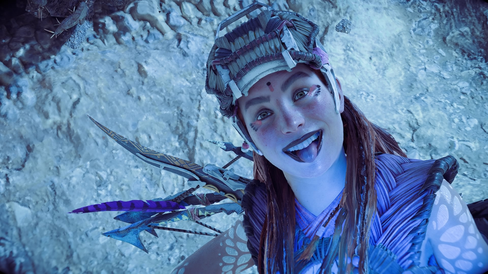

Figuras destacadas
Avad
El rey libertador que rige actualmente Meridian y a todos los carjas de estas prosperas tierras,Quien con coraje y ayuda de los Oseram nos libero de la tirania de Jiran.

Erend
Antiguo segundo al mando y actualmente capitan de la vanguardia quien con su hermana Ersa y sus leales guerreros ayudaron en la liberacion de Meridian,por supuesto presidido de nuestro legitimo rey sol.

Aloy
Salvadora nora de Meridian de las garras del mundo antiguo que busco acabar con todo.
